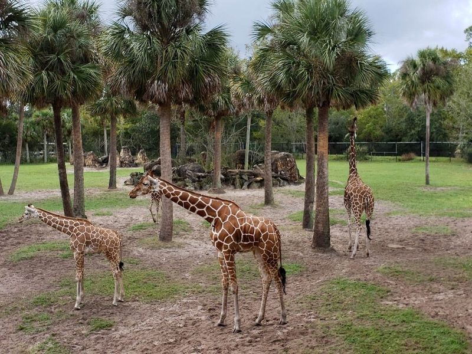
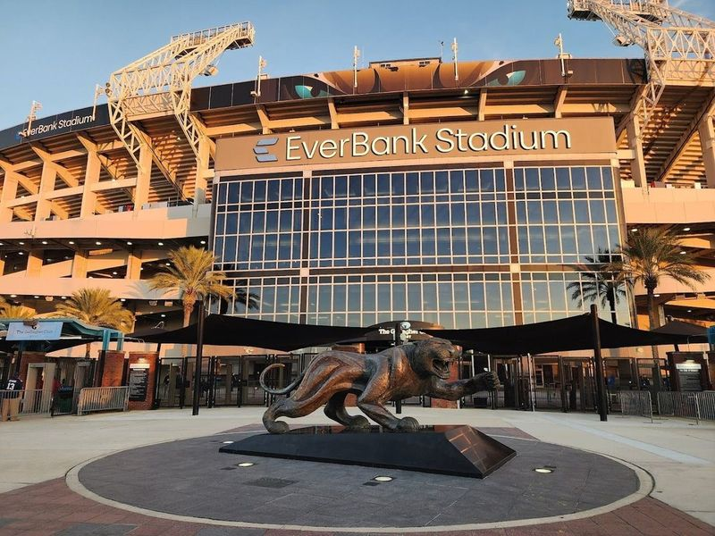
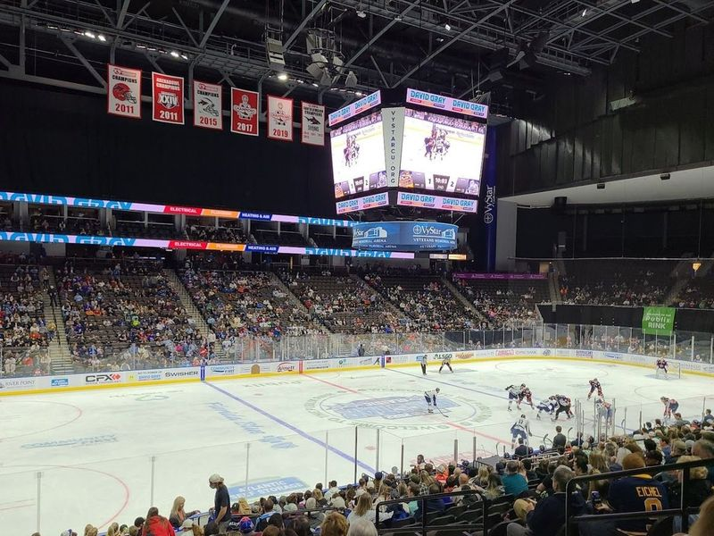
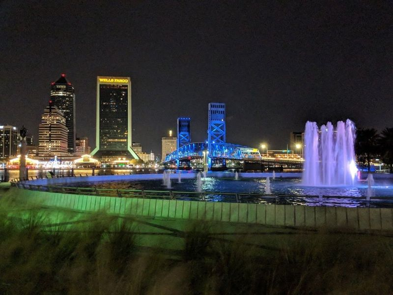
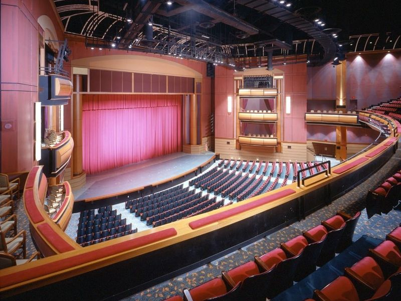
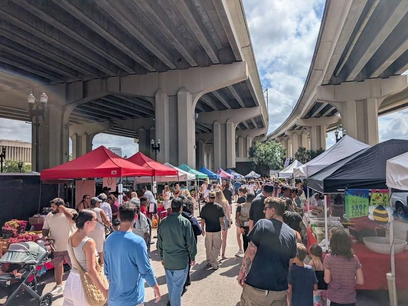
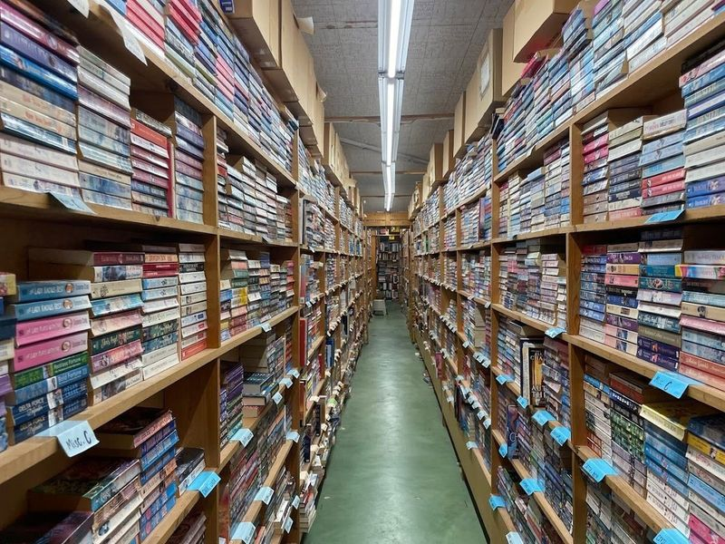
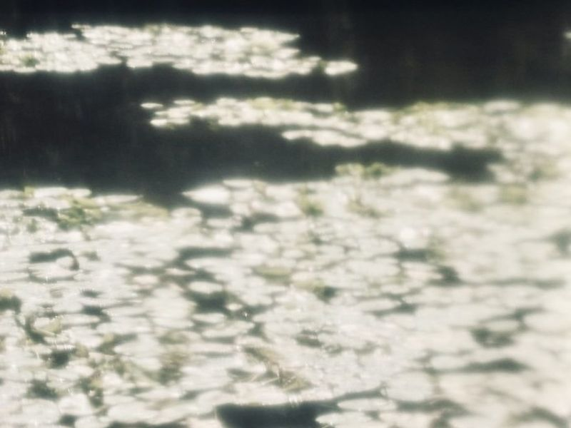
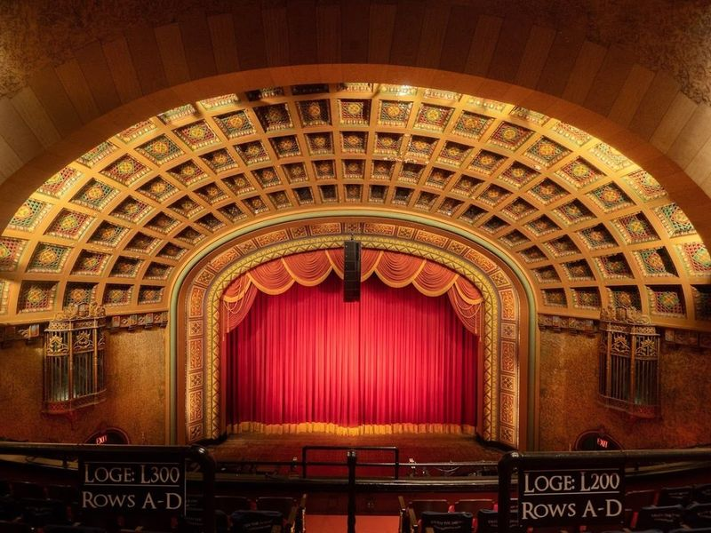
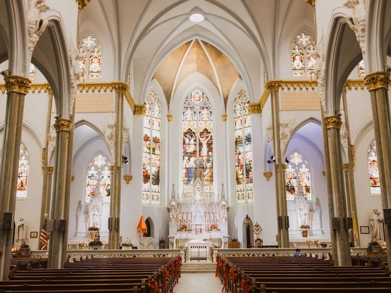

Explore Jacksonville, FL
A Brief History
Jacksonville developed around a St. Johns River crossing used by Spanish missions and British colonial plantations before Florida statehood. Riverwalk redevelopment, Timucuan preserve shell mounds, and port warehouses record how steamship tourism, Great Fire rebuilding in 1901, and naval-base expansion made northeast Florida's largest city a Atlantic logistics centre.
Attractions Map
Top Sights & Activities

Jacksonville Zoo and Botanical Gardens
Nestled along the scenic Trout River, the Jacksonville Zoo and Gardens is a delightful destination for families and wildlife enthusiasts alike. Spanning 115 acres, this unique zoo offers an immersive experience with its walking safari layout. Visitors can explore diverse habitats, from the majestic Land of the Tiger featuring Sumatran and Malayan tigers to the expansive African Plains where elephants and endangered leopards roam.

EverBank Stadium
EverBank Stadium, located in downtown Jacksonville along the St. Johns River, is a prominent indoor stadium that serves as the home of the NFL's Jacksonville Jaguars and hosts various events throughout the year. In addition to being the venue for exhilarating football games, including the annual NCAA rivalry between University of Florida and University of Georgia, it also hosts the TaxSlayer Gator Bowl and other live events like concerts and Monster Jam.

VyStar Veterans Memorial Arena
VyStar Veterans Memorial Arena is a versatile venue in Jacksonville, FL that serves as the home stadium for various sports teams including the AFL Sharks and ABA Giants. The arena, with a seating capacity of 15,000 people, hosts a wide range of events such as NCAA tournament games, family-friendly shows like Cirque du Soleil and Disney on Ice, and concerts featuring renowned artists like The Eagles, Rihanna and Elton John.

Friendship Fountain
Friendship Fountain is a huge, circular fountain with jets of water shooting up to 120 feet into the air. The fountain is located in Friendship Park, which is also home to Museum of Science and History. The Fountain of Friendship has been an fixture of Jacksonville for over 50 years and its recent renovations have kept it up-to-date with the times. Views from the Southbank Riverwalk and John T.

Jacksonville Center for the Performing Arts
The Jacksonville Center for the Performing Arts is a modern complex located in downtown Jacksonville, featuring three theaters of varying sizes. The Moran Theater, with 2,900 seats, hosts Broadway shows and accommodates rock concerts and opera performances. The Jacoby Symphony Hall, with 1,800 seats arranged in three tiers, offers outstanding acoustics ideal for the Jacksonville Symphony Orchestra.

Riverside Arts Market
Riverside Arts Market, also known as RAM, is a and bustling market held every Saturday under Jacksonville's Fuller Warren Bridge. With over 4,000 weekly visitors, it has gained recognition as one of Florida's top farmers' markets. From 10:00 am to 3:00 pm (or sellout), visitors can explore and purchase a variety of local produce, meat, dairy products, pantry goods, artisan crafts while enjoying live music performances.

Chamblin Bookmine
Chamblin Bookmine in Jacksonville is a paradise for book lovers, with its labyrinthine layout and extensive collection of new, used, and rare books. Since 1976, this bookstore has been offering an impressive array of genres at affordable prices. The store also provides store credit for used books. While the aisles are tightly packed and not wheelchair-friendly, the knowledgeable staff and unique organization by categories like vegetables make it a must-visit destination for any book enthusiast.

Jacksonville Arboretum & Botanical Gardens
Jacksonville Arboretum & Botanical Gardens anchors a familiar sightseeing stop in Jacksonville, FL. Visitors encounter it along the city’s central routes through United States, often combining the visit with nearby parks, museums, and historic streets on the same itinerary. Street-level access and clear signage make it easy to reach on foot or by public transit from downtown districts.

Florida Theatre, Inc.
Nestled in the heart of Downtown Jacksonville, Florida Theatre, Inc. is a captivating venue that has been enchanting audiences since its grand opening in 1927. This historic hall stands as one of the last remaining high-style Movie Palaces from the roaring twenties and proudly holds a spot on the National Register of Historic Places.

Basilica of The Immaculate Conception
The Basilica of the Immaculate Conception in downtown Jacksonville is a historic Catholic church with a tumultuous past. Destroyed and rebuilt multiple times, it stands as one of Florida's examples of late gothic revival architecture. The church's towering height and intricate design featuring arches, spires, steeples, and vaults make it a prominent landmark in the area.